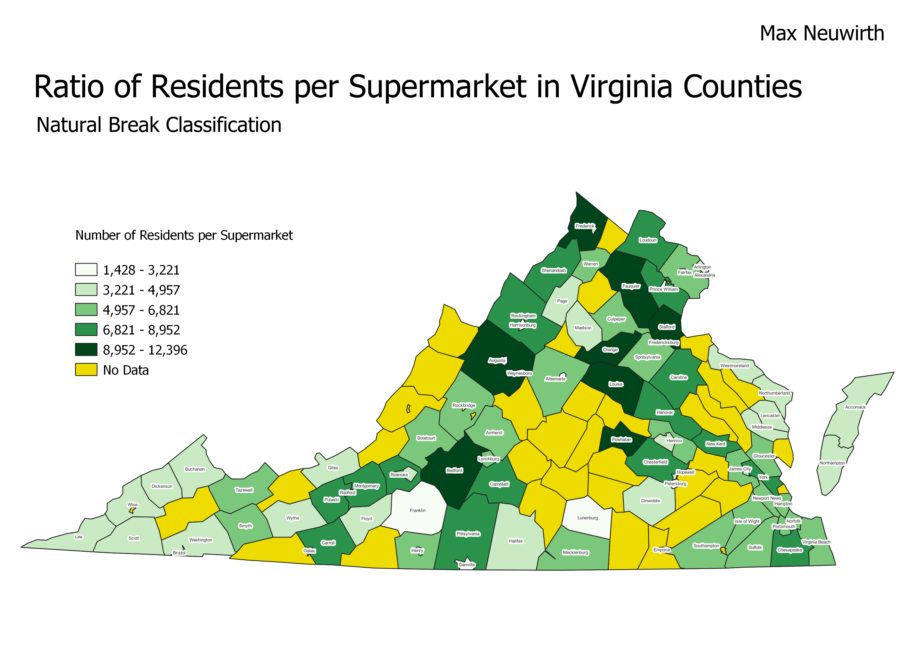
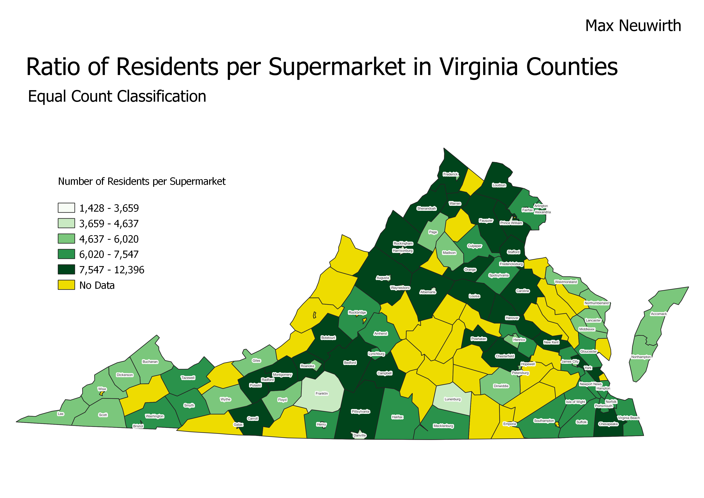
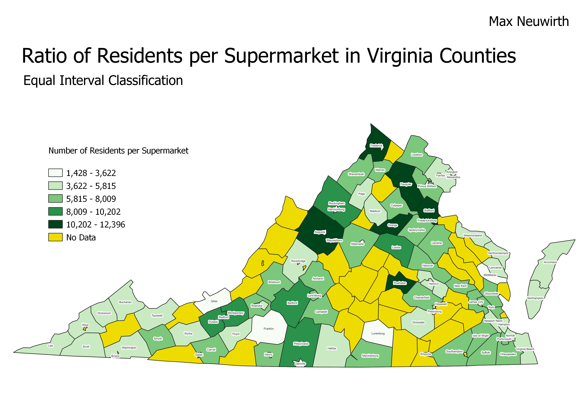

Homework 6-2: Census Data Ratios and Categories
Max Neuwirth
TBA ratio description
Natural Break Classification

TBA pros & cons
Equal Count Classification

TBA pros & cons
Equal Interval Classification

TBA pros & cons
Data used for this project
CSV dataset 1
CSV dataset 2
Link to geojson